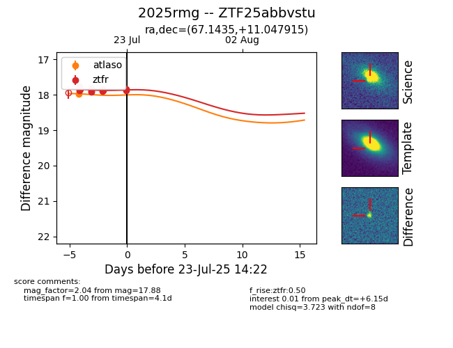

Target ZTF25abbvstu at 2025-07-23 14:22, see:
FINK: fink-portal.org/ZTF25abbvstu
Lasair: lasair-ztf.lsst.ac.uk/objects/ZTF25abbvstu
ALeRCE: alerce.online/object/ZTF25abbvstu
TNS: wis-tns.org/object/2025rmg
YSE: ziggy.ucolick.org/yse/transient_detail/2025rmg
alt names
ZTF25abbvstu (ztf,fink)
2025rmg (tns,yse)
coordinates:
equatorial (ra, dec) = (67.1435,+11.04792)
galactic (l, b) = (184.4799,-24.99492)
photometry
last atlaso=17.97, ztfr=17.88
1 atlaso, 11 ztfr detections
